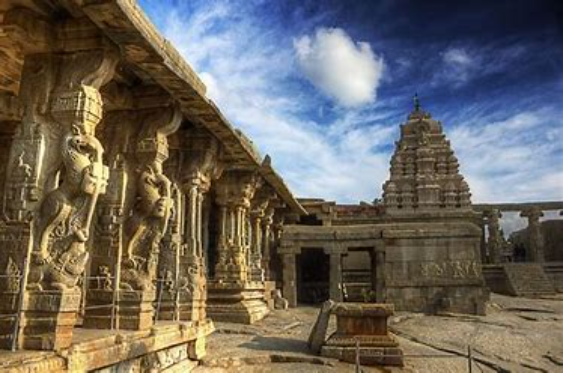
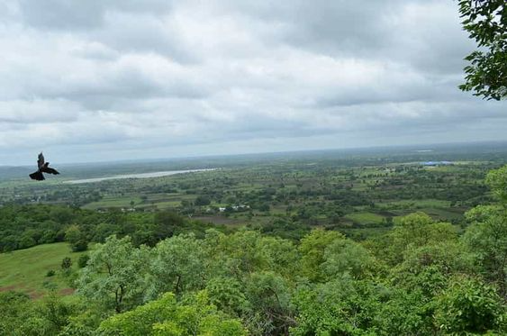

Lepakshi Temple

Lepakshi is a small village located in the Anantapur district of Andhra Pradesh, India, renowned for its rich cultural heritage and architectural marvels. The village is best known for the Veerabhadra Temple, an ancient temple dedicated to Lord Shiva in the form of Veerabhadra, a fierce deity in Hindu mythology. Constructed during the Vijayanagara Empire in the 16th century, the temple is a splendid example of Vijayanagara architecture, characterized by intricate carvings, exquisite sculptures, and detailed friezes depicting mythological stories and scenes from Hindu epics like the Ramayana and Mahabharata.
One of the most striking features of the Veerabhadra Temple is its massive monolithic Nandi (bull), which is carved out of a single granite rock and stands at the entrance of the temple complex. The temple also houses a unique hanging pillar, which is believed to be unsupported and hangs from the ceiling. Lepakshi is also famous for its ceiling paintings, which depict various mythological and historical themes with vibrant colors and intricate details.
Lepakshi Temple:
Best Time To visit: The winter season (October - February) this time of the year is pleasant and agreeable with temperatures falling as low as 16-degree Celsius during the day.
Nearest: Hindupur (14 Kms) is the nearest Train Station to Lepakhsi.
By car: 18 min
By bike:18 min
Timings: 6AM-6PM
Location
Ananthagiri Hills

Anantha Giri Hills, also known as Ananthagiri Hills, is a scenic hill range located in the Eastern Ghats of Telangana, India. Situated around 10 kilometers from Vikarabad town, these hills are known for their lush greenery, tranquil ambiance, and picturesque landscapes. Anantha Giri Hills are a popular destination for nature lovers, adventure enthusiasts, and those seeking a peaceful retreat away from the hustle and bustle of city life.
The hills are characterized by dense forests, winding trails, and several streams and waterfalls that cascade down the slopes, adding to the natural beauty of the area. The cool and refreshing climate of Anantha Giri Hills makes it an ideal spot for outdoor activities such as trekking, hiking, and camping. Visitors can explore the scenic trails that meander through the forested slopes, offering breathtaking views of the surrounding valleys and plains.
Ananthagiri hills:
The best season to visit Ananthagiri is from October - March. Temple Timings: 5 am -1 pm and 3 pm - 8.30 pm.
Ananthagiri Hills is located in Vikarabad district, Telangana, India. The water flows from these hills to Osman Sagar, also known as Gandipet lake, and Himayathsagar. It is one of the dense forests in Telangana. Ananthagiri Temple is located in this forested area.
The cheapest way to get from Hyderabad to Ananthagiri Hills, Vikarabad district is to train which costs ₹310 - ₹900 and takes 1h 12m.
Location
Pulicat Lake
Pulicat Lake is the second largest brackish water lake or lagoon in India, located at the border of Andhra Pradesh and Tamil Nadu states, near the city of Chennai. Covering an area of approximately 720 square kilometers, Pulicat Lake is separated from the Bay of Bengal by the barrier island of Sriharikota, which houses India's primary satellite launch center, the Satish Dhawan Space Centre.
The lake is renowned for its rich biodiversity, serving as a crucial habitat for numerous resident and migratory bird species. It is a designated bird sanctuary and a haven for birdwatchers, particularly during the winter months when thousands of migratory birds, including flamingos, pelicans, and ducks, flock to the lake from various parts of the world.
Pulicat Lake:
The nearest train station to Pulicat Lake in Saidapet is Wimco Nagar Railway Station. It's a 26 min walk away.
6:00 AM -6:00 PM.
Between October and March
Location